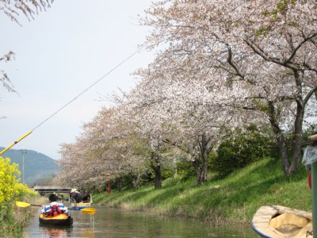
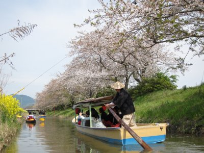
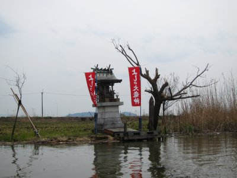
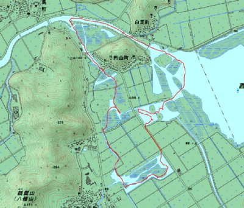

水郷巡りカヤック | 2013年4月 |
|---|---|
| 腹をこわして花見会に出席できず、このまま今年は桜を見ないのかと思っていたところ、maruさんが「カヤックで水郷巡りをやろう」と言うので、日帰りで琵琶湖に進出です！ 場所は滋賀県の琵琶湖東側、近江八幡です。 湿地帯と水路が入り組んでいる場所で、カヌーイストには有名案場所みたい。 | |
 ここから出発します |  桜が綺麗ですね〜奥は葉桜・・・ |
| 水路は手こぎの観光船が出てまして、同じく水郷巡りをやっております。 早朝に静岡を出発し、高速道路をひたすら走り、9時頃に現地着。 早速、カヤックを組み立て水路に漕ぎ出します。 | |
|  手こぎ観光船も通ります |  雰囲気良いでしょう〜 |
| 桜は・・・・咲いてはいるけど最盛期過ぎたっぽく、既に葉桜がチラホラ。それでも、狭い水路と菜の花、桜が素晴らしく心地良いです。手こぎの観光船も、挨拶を交わしながら道を譲ります。これで桜満開ならもっと凄いだろうな〜 水路は暗黙の了解で一方通行らしく、桜並木を抜けたら湿地帯に出て一周しなければなりません。と言うか、桜並木は直ぐ終わっちゃうので、他も廻らないとココまで来たのにもったいない。葦の茂った湿地も、水面から見ると変わった感じで楽しいです。 遠回りで漕いだけど1時前には上陸。近くに日牟禮八幡宮があってなにやらお祭りのようなので、ちょこっと寄り道して昼飯食べるところ探したけど、良いところ見つからず、結局、高速のサービスエリアで昼食取って帰ってきました。 泊まりで行って、他の場所攻めるのみ良いかもね。 | |
|  水路の途中にある「よしの大竜神」 |  今回のルート。下から反時計廻り |
| 写真＆コメント ｂｙ べっしー | |